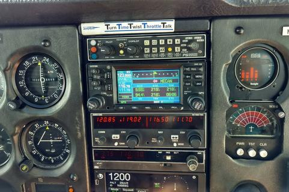
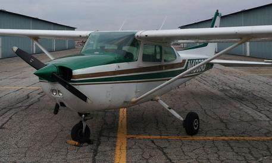
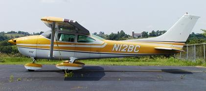

4869G is a 1980 Model Cessna 172
November, with a 2-axis S-TEC autopilot with altitude hold, and a 3M
WX-8 stormscope. 69G is normally parked in Hangar D-6. AVEMCO
Insurance hours requirements are on the bulletin board in hangar D-5.
69G has a Useful Load of 813.45 pounds. -Empty Weight is
1486.55 (weighed on 21July2005 by OSU maintenance) pounds.
-Moment, divided by 1000, is 58.0. -69G is equipped with
standard tanks, total usable fuel 40 gallons. -69G is equipped
with an Garmin GNS 430 GPS, which is a full WAAS enabled model with
database data card currency.
-69G is equipped with a Lynx NGT-9000 ADS-B transponder with
traffic and weather. -69G is also equipped with a Graphic
Engine Monitor.
69G's color is green & gold stripes on
white. Dry time rate is $48 per tachometer hour. Fuel is billed at 9
gph. Minimum octane fuel is 100-octane.Engine type is a Lycoming
0-320 Series rated @ 160 HP. Aircraft serial number is 17273416



12BC is a 1973 Model Cessna 182
Papa, w/a 1-axis autopilot and built-in 4-place intercom. 2BC is
equipped with a complete Reiff preheat system. This system includes
heaters on the battery, oil sump, and each cylinder. As a general
rule, we should keep it plugged in continuously during the months of
December thru March, and other times as needed. AVEMCO
Insurance hours requirements in make & model for the 182 are...
-If one has less than 100 hours total time, one must have logged a
minimum of 10 hours in 182's. -If one has more than 100 hours
total time, one must have logged a minimum of 5 hours in 182's.
Complete insurance requirements are on the bulletin board in hangar
D-5. 2BC has a Useful Load of 1,151 pounds. Refer to page
4-6 of your Skylane owner's manual for Weight & balance loading
calculations, and utilize the following data... -Licensed Empty
Weight is 1,799 pounds, -Moment, divided by 1,000, is 66.3.
-2BC is equipped with long range tanks, total usable fuel 79 gallons.
-2BC is equipped with a Lynx NGT-9000 ADS-B unit with weather and
traffic. -2BC is equipped with a Garmin 430 GPS IFR ready,
transponder, DME and altitude encoding, therefore the flight plan
equipment suffix is "slant golf." -2BC is equipped with a
digital carburetor temperature gauge to guard against carburetor
icing, as well as a Graphic Engine Monitor as an "eye" into the
health of your engine as well as assisting in proper leaning.
2BC's color is yellow on white. Dry time rate is $60.00 per
tachometer hour. Fuel is billed at 14 gph. Minimum octane
fuel is 80-octane. Note, 100LL fuel may be used, but no KATS
savings rebate will apply. Engine type is a Continental
O-470-R25B, rated at 230 HP. Engine recommended TBO is 1,500 hours.
This information updated on May 22nd, 1999. Weight & Balance
data was from latest Weight & Balance sheet dated Feb 15th, 1999.
Aircraft serial number is 18261895.